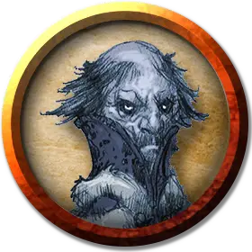

Николай Вахтер
Nikolai Wachter
Средний Гуманоид (Человек), законно-нейтральный, именной НИП

Класс Доспеха 15 (кираса)
Хиты 9 (2к8)
Скорость 30 футов
| мод | спас | ||
|---|---|---|---|
| СИЛ | 11 | +0 | +0 |
| ЛОВ | 12 | +1 | +1 |
| ТЕЛ | 11 | +0 | +0 |
| мод | спас | ||
|---|---|---|---|
| ИНТ | 12 | +1 | +1 |
| МДР | 14 | +2 | +2 |
| ХАР | 16 | +3 | +3 |
Навыки Обман +5, Проницательность +4, Убеждение +5
Чувства пассивное Восприятие 12
Опасность 1/8 (25 опыта)
Бонус мастерства +2
Особенности
Языки. Два любых языка.
Действия
Рапира. Рукопашная атака оружием: +3 к попаданию, досягаемость 5 футов, одна цель. Попадание: Колющий урон 5 (1к8 + 1).
Реакции
Парирование. Николай добавляет 2 к КД против одной рукопашной атаки, которая должна попасть по нему. Для этого Николай должен видеть атакующего, и должен использовать рукопашное оружие.
Описание
Николай Вахтер старший, ныне покойный (см. главу 5, область N4o). Если персонажи сотворят заклинание оживление [Raise dead] или воскрешение [resurrection] на его сохранившийся труп, Николай согласен помочь персонажам, как только ему станет немного лучше, не взирая на протесты его жены.
Хотя его семья долгое время поддерживала Страда, Николай пришёл к концу жизни осознал, что для спасения Баровии Страда следует уничтожить.
Если персонажи не обладают никакими возможностями к воскрешению Николая, Риктавио отдаёт им свиток заклинания оживление [Raise dead], если узнает об их нужде. Если они останавливаются на постоялом дворе Синяя Вода, он оставит свиток в одной из их комнат.